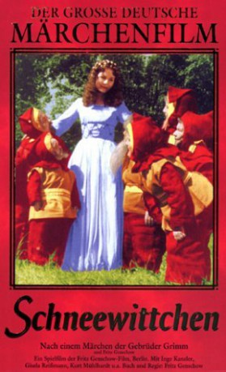

#10338 Schneewittchen und die 7 Zwerge
 
 IMDB-Wertung: 5.3 / 10
IMDB-Wertung: 5.3 / 10  Metascore: 0
Metascore: 0 
Snow White's mother, the Queen dies when she is born. Her father, the King, remarries a beautiful but vain lady. The new Queen has a magic mirror that she asks every day, who is the fairest one of all? When it answers Snow White, the Queen is furious. Will handsome Prince Charming and the Seven Dwarfs be able to save Snow White from the wicked Queen's wrath?
Jahr: 1955
Dauer: 76 Minuten
FSK: 6
Land: West-Deutschland Studio: Jugendfilm-VerleihTonspuren:
Untertitel:
Auflösung: SD (934x720) Größe: 2037 MB
Genre: Fantasy, Familie, Liebe
Regisseur: Erich Kobler
Drehbuch: Konrad Lustig, Walter Oehmichen, Jacob Grimm, Wilhelm Grimm
Soundtrack: Anne Delugg, Franz Miller, Carl Stueber
Darsteller:
- Elke Arendt als Schneewittchen
- Addi Adametz als Böse Königin
- Niels Clausnitzer als Prinz
- Dietrich Thoms als Jäger
- Renate Eichholz als Mutter
- Zita Hitz als Kammerfrau
- Erwin Platzer als Kleiner Mohr
Datei: X:\Märchen\Schneewittchen und die 7 Zwerge (1955, FSK6, 934x720).mkv seit 29.12.2018
Festplatte: Kinder-Filme+Trick
 Es gibt insgesamt 61 Filme in der Gruppe 'Märchen'
Es gibt insgesamt 61 Filme in der Gruppe 'Märchen'